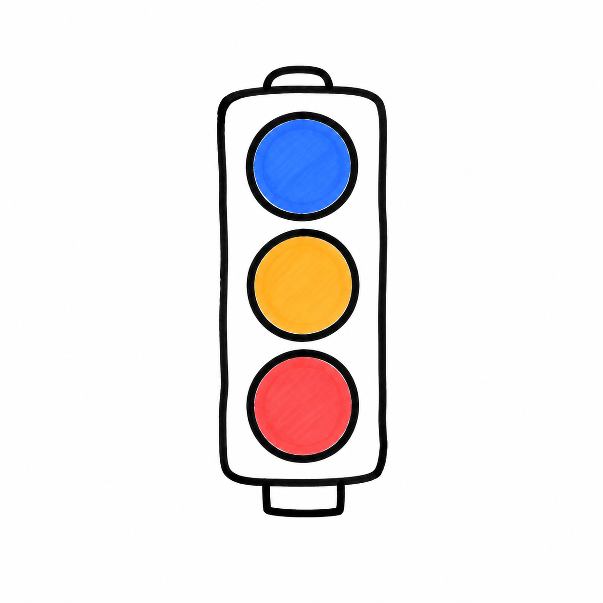

無料で足りる？
条件つき？
それとも有料・自作へ？
「入れれば無料でずっと回る」は誤解。青→黄→赤の信号で"次の一歩"を判定する

青信号｜無料で足りる
今はまだ有料化を急がない
PoC（試し導入）段階・単発や少量の業務・使うのは少人数・機密情報を扱わない。どれかに当てはまるうちは、無料で相性を見極める。
黄信号｜条件つき
折れる条件を先に言語化する
回数がやや足りなくなってきた・精度に不満が出はじめた・連携を増やしたい。有料化のタイミングを見積もる先行指標。
赤信号｜有料・自作へ
迷わず次の一歩へ折れる
回数上限に頻繁に到達・高性能／高速処理が要る・他部署へ展開したい・機密情報や法令要件が絡む。複数が同時に立ったら合図。
AIを会社のOSにする。